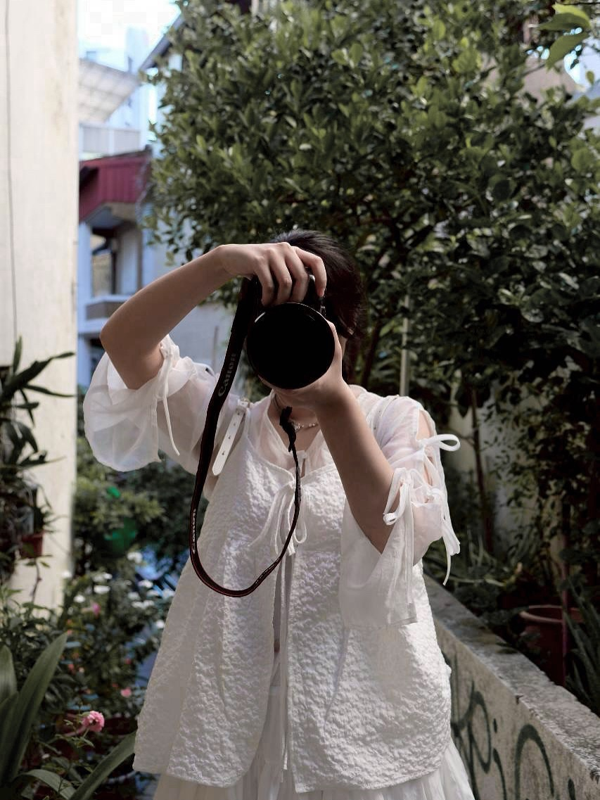

Personal Website
UX Intern × Photographer
我是一位大一學生，目前在一個 stealth startup 擔任 UX Intern。平常最喜歡用影像觀察生活，把情緒、光線與故事留下來。
這是我的作品入口頁，詳細介紹與完整作品放在各分頁中。
興趣：攝影
Camera：Canon R6 Mark II
Lens：Canon RF 24-105mm

Personal Website
我是一位大一學生，目前在一個 stealth startup 擔任 UX Intern。平常最喜歡用影像觀察生活，把情緒、光線與故事留下來。
這是我的作品入口頁，詳細介紹與完整作品放在各分頁中。